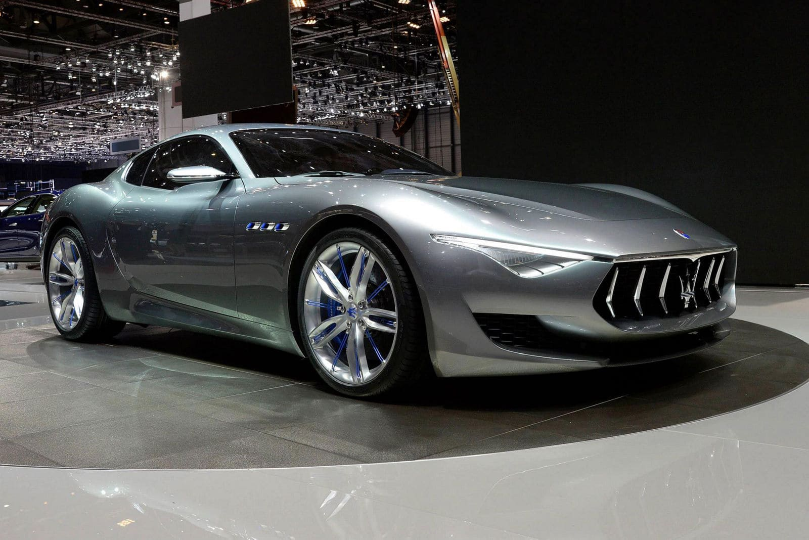
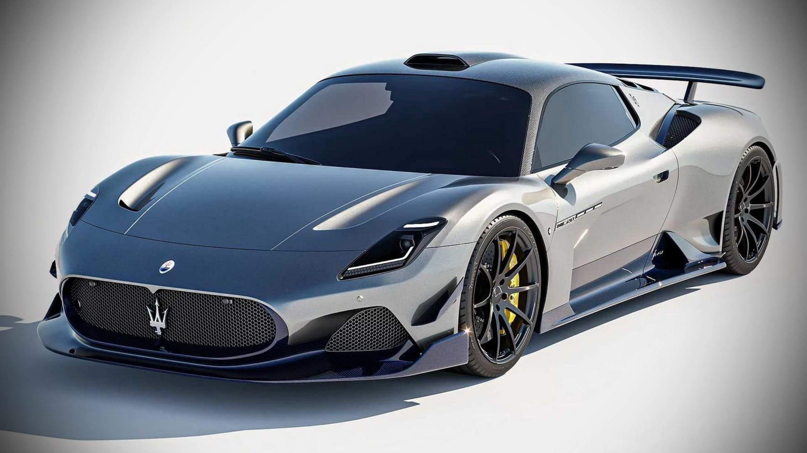
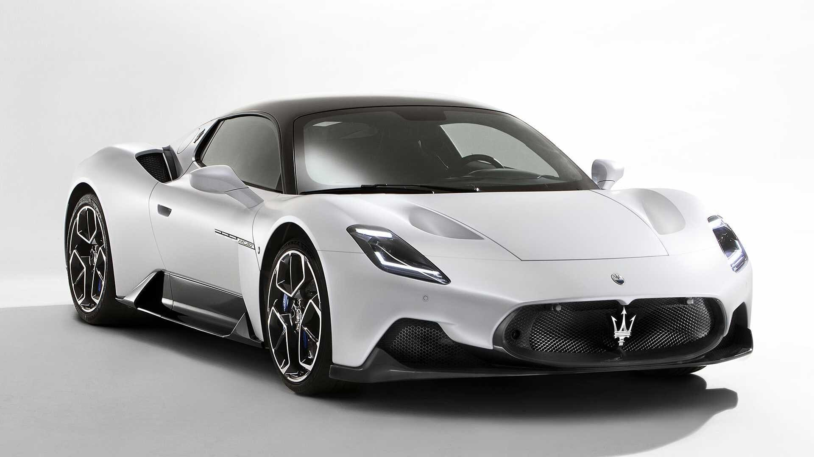
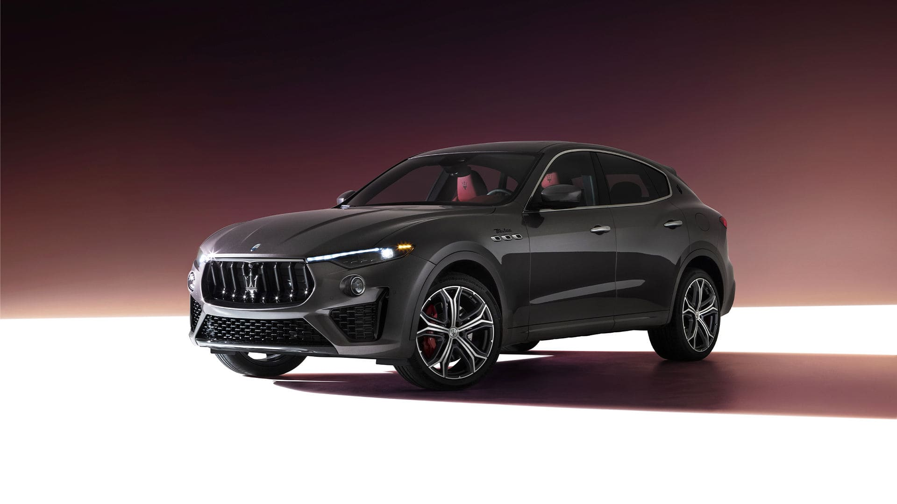
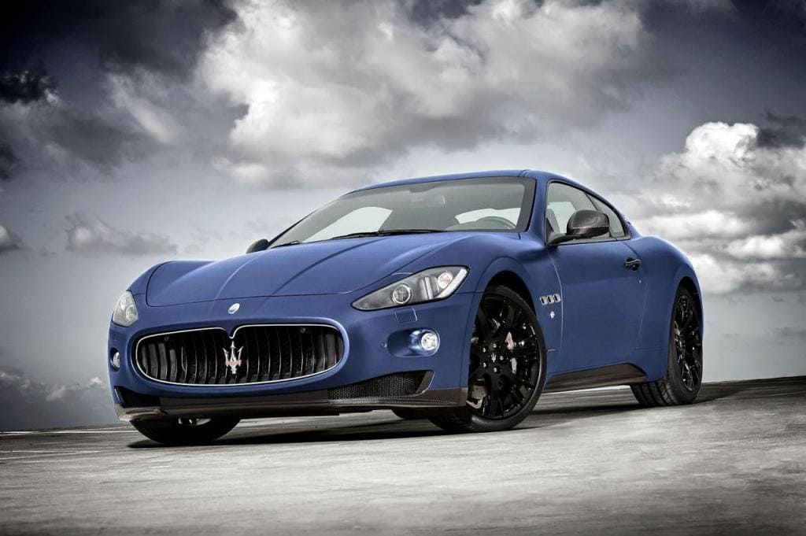
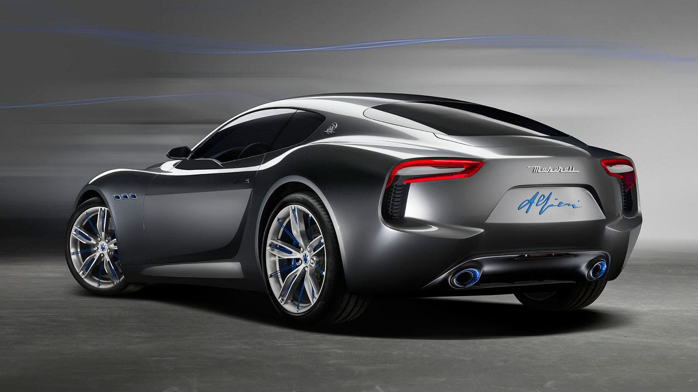
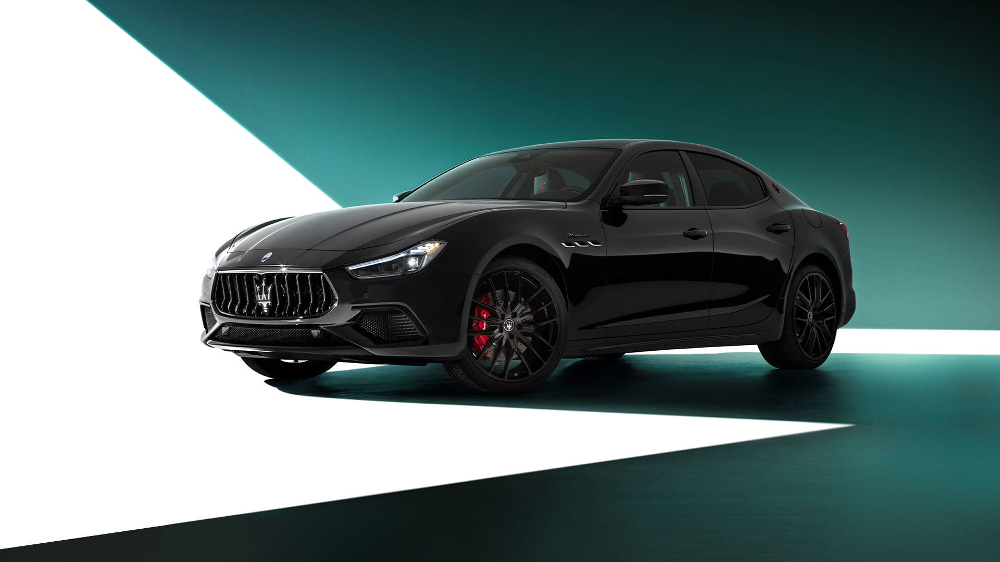
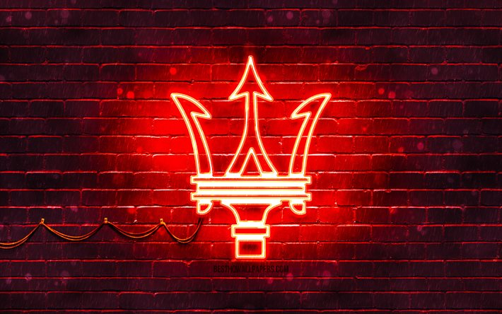
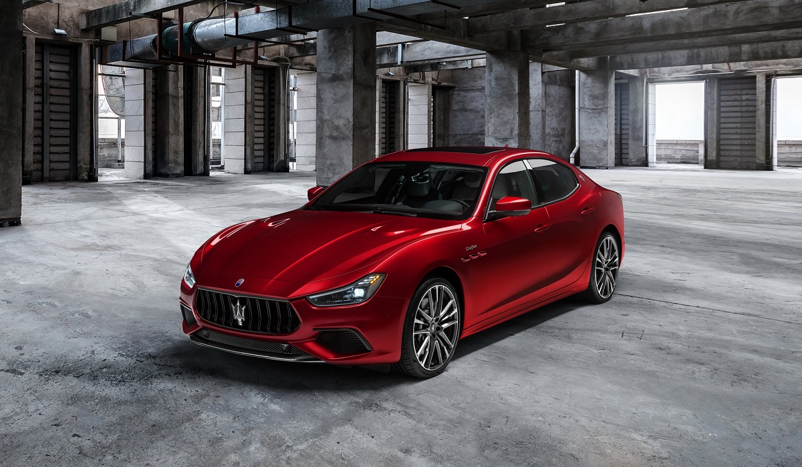

Maserati Alfieri
Серджио Маркионне, который занимает пост исполнительного директора Fiat Chrysler Automobile (FCA), куда собственно и входит премиальный бренд Maserati, не раз упоминал о необходимости развития «зеленого» направления. Ярким образцом подтверждения этих замыслов стало появление концепта Maserati Alfieri, который был представлен еще 2 года назад. Серийный выпуска электрокара Alfieri запланирован на 2019 год.
Read more

Maserati MC20 Ariа
Американское ателье 7 Designs украсило Maserati MC20 карбоновым тюнинг-обвесом Ariа. Дизайнеров не смутило то, что Maserati до сих пор занимается доводкой купе, а первые клиенты получат MC20 в конце года. Благодаря современным технологиям 3D-моделирования тюнинг-кит удалось разработать ещё до начала продаж суперкара.
Read more

Maserati MC20 2020
Мазерати снова меняет имидж. Ранее бренд перешел от гоночных автомобилей к роскошным седанам, затем пошли внедорожники, и теперь, спустя 16 лет, пришло время показать свою спортивную сущность и вернуться в автоспорт.
Read more

Maserati Levante
Maserati Levante — кроссовер от компании Maserati, который был официально представлен в 2011 году на автосалоне во Франкфурте как концепт-кар под названием Maserati Kubang, позже серийная модель, дебютировавшая на автосалоне в Женеве в марте 2016 года, получила название Levante.
Read more

Maserati Ghibli
Maserati выпустила ультраредкий Ghibli. Построенный в рамках программы кастомизации Maserati Fuoriserie, седан под названием Ghibli Hybrid Love Audacious создан в партнерстве с китайским брендом уличной одежды CANOTWAIT_ и его основателем – актером, певцом и законодателем моды Уильямом Чаном.
Read more

Maserati Alfieri
В рамках пятилетнего плана развития материнской компании Fiat Chrysler Automobile, объявленного на прошлой неделе, Maserati подтвердила, что запустит модель Alfieri в производство примерно к 2022 году.
Read more

Quattroporte Trofeo
Вопреки ожиданиям, набор внешних доработок у автомобилей с приставками Trofeo оказался довольно скромным — такие машины можно опознать по чуть более агрессивному обвесу и решетке, красным акцентам на кузове и слегка измененной оптике, а топ-версия седана Ghibli вдобавок обзавелась новым капотом с двумя воздуховодами. Кроме того, «заряженные» Quattroporte и Ghibli Trofeo могут похвастать 21-дюймовыми легкосплавными колесами эксклюзивного дизайна (у кроссовера Levante в аналогичной модификации — 22-дюймовые). Вне зависимости от модели изменения в интерьере сводятся к особой отделке салона дорогой кожей, новой медиасистеме и кнопке активации экстремального режима Corsa.
Read more

Quattroporte и Ghibli Trofeo
Два года назад кроссовер Maserati Levante обзавелся экстремальной версией Trofeo с битурбомотором V8 3.8 (590 л.с., 730 Нм), но вскоре аналогичные модификации появятся и у седанов Ghibli и Quattroporte. Компания опубликовала тизер семейства «заряженных» моделей и назвала дату премьеры — 10 августа. Увы, разглядеть детали экстерьера на официальном изображении практически невозможно, однако есть вероятность, что Levante Trofeo перенесет легкий рестайлинг, а четырехдверкам отрядят характерные внешние доработки вроде углепластикового обвеса и больших колес.
Read more

Ghibli Trofeo
На всех автомобилях из линейки Trofeo моторы работают в паре с безальтернативными восьмиступенчатыми «автоматами» ZF, причем в разгоне до 100 км/ч быстрее всех оказался полноприводный Levante (4,1 секунды). Максимальная скорость кроссовера — 302 км/ч. Заднеприводные Ghibli Trofeo и Quattroporte Trofeo набирают «сотню» за 4,3 и 4,5 с соответственно, а максимальная скорость у обеих четырехдверок составляет 326 км/ч, что делает их самыми быстрыми седанами в истории итальянской марки. Кстати, launch control есть у всех трех моделей.
Read more